12 Performing spatial analysis
Highly multiplexed imaging technologies measure the spatial distributions of molecule abundances across tissue sections. As such, having the option to analyze single cells in their spatial tissue context is a key strength of these technologies.
A number of software packages such as squidpy, giotto and Seurat have been developed to analyse and visualize cells in their spatial context. The following chapter will highlight the use of imcRtools and other Bioconductor packages to visualize and analyse single-cell data obtained from highly multiplexed imaging technologies.
We will first read in the spatially-annotated single-cell data processed in the previous sections.
12.1 Spatial interaction graphs
Many spatial analysis approaches either compare the observed versus expected number of cells around a given cell type (point process) or utilize interaction graphs (spatial object graphs) to estimate clustering or interaction frequencies between cell types.
The steinbock framework allows the construction of these spatial graphs. During image processing (see Section 4.3), we have constructed a spatial graph by expanding the individual cell masks by 4 pixels.
The imcRtools package further allows the ad hoc consctruction of spatial
graphs directly using a SpatialExperiment or SingleCellExperiment object
while considering the spatial location (centroids) of individual cells. The
buildSpatialGraph
function allows constructing spatial graphs by detecting the k-nearest neighbors
in 2D (knn), by detecting all cells within a given distance to the center cell
(expansion) and by Delaunay triangulation (delaunay).
When constructing a knn graph, the number of neighbors (k) needs to be set and
(optionally) the maximum distance to consider (max_dist) can be specified.
When constructing a graph via expansion, the distance to expand (threshold)
needs to be provided. For graphs constructed via Delaunay triangulation,
the max_dist parameter can be set to avoid unusually large connections at the
edge of the image.
## The returned object is ordered by the 'sample_id' entry.## The returned object is ordered by the 'sample_id' entry.## The returned object is ordered by the 'sample_id' entry.The spatial graphs are stored in colPair(spe, name) slots. These slots store
SelfHits objects representing edge lists in which the first column indicates
the index of the “from” cell and the second column the index of the “to” cell.
Each edge list is newly constructed when subsetting the object.
## [1] "neighborhood" "knn_interaction_graph"
## [3] "expansion_interaction_graph" "delaunay_interaction_graph"Here, colPair(spe, "neighborhood") stores the spatial graph constructed by
steinbock, colPair(spe, "knn_interaction_graph") stores the knn spatial
graph, colPair(spe, "expansion_interaction_graph") stores the expansion graph
and colPair(spe, "delaunay_interaction_graph") stores the graph constructed by
Delaunay triangulation.
12.2 Spatial visualization
Section 11 highlights the use of the cytomapper package to visualize multichannel images and segmentation masks. Here, we introduce the plotSpatial function of the imcRtools package to visualize the cells’ centroids and cell-cell interactions as spatial graphs.
In the following example, we select one image for visualization purposes.
Here, each dot (node) represents a cell and edges are drawn between cells
in close physical proximity as detected by steinbock or the buildSpatialGraph
function. Nodes are variably colored based on the cell type and edges are
colored in grey.
library(ggplot2)
library(viridis)
# steinbock interaction graph
plotSpatial(spe[,spe$sample_id == "Patient3_001"],
node_color_by = "celltype",
img_id = "sample_id",
draw_edges = TRUE,
colPairName = "neighborhood",
nodes_first = FALSE,
edge_color_fix = "grey") +
scale_color_manual(values = metadata(spe)$color_vectors$celltype) +
ggtitle("steinbock interaction graph")
# knn interaction graph
plotSpatial(spe[,spe$sample_id == "Patient3_001"],
node_color_by = "celltype",
img_id = "sample_id",
draw_edges = TRUE,
colPairName = "knn_interaction_graph",
nodes_first = FALSE,
edge_color_fix = "grey") +
scale_color_manual(values = metadata(spe)$color_vectors$celltype) +
ggtitle("knn interaction graph")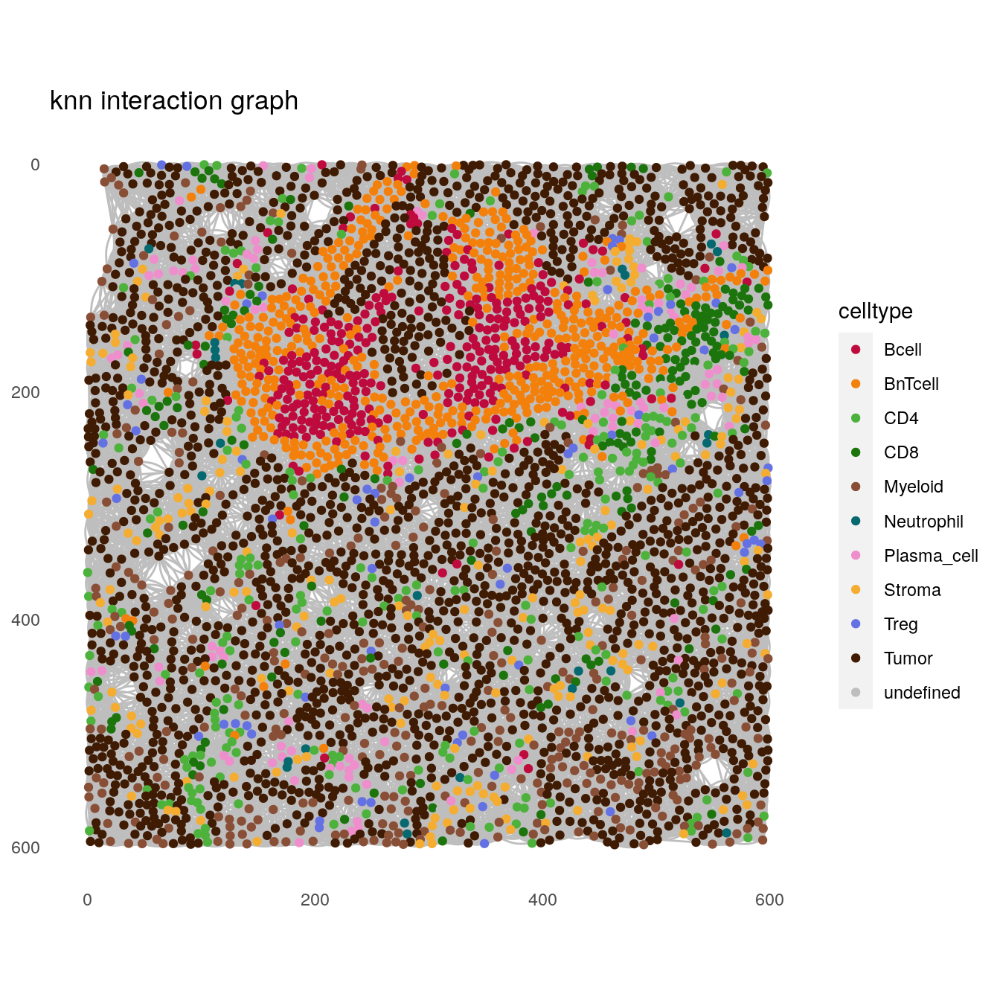
# expansion interaction graph
plotSpatial(spe[,spe$sample_id == "Patient3_001"],
node_color_by = "celltype",
img_id = "sample_id",
draw_edges = TRUE,
colPairName = "expansion_interaction_graph",
nodes_first = FALSE,
edge_color_fix = "grey") +
scale_color_manual(values = metadata(spe)$color_vectors$celltype) +
ggtitle("expansion interaction graph")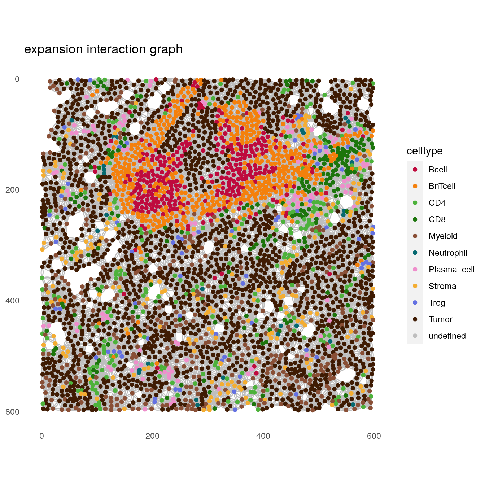
# delaunay interaction graph
plotSpatial(spe[,spe$sample_id == "Patient3_001"],
node_color_by = "celltype",
img_id = "sample_id",
draw_edges = TRUE,
colPairName = "delaunay_interaction_graph",
nodes_first = FALSE,
edge_color_fix = "grey") +
scale_color_manual(values = metadata(spe)$color_vectors$celltype) +
ggtitle("delaunay interaction graph")Nodes can also be colored based on the cells’ expression levels (e.g., E-cadherin expression) and their size can be adjusted (e.g., based on measured cell area).
plotSpatial(spe[,spe$sample_id == "Patient3_001"],
node_color_by = "Ecad",
assay_type = "exprs",
img_id = "sample_id",
draw_edges = TRUE,
colPairName = "expansion_interaction_graph",
nodes_first = FALSE,
node_size_by = "area",
directed = FALSE,
edge_color_fix = "grey") +
scale_size_continuous(range = c(0.1, 2)) +
ggtitle("E-cadherin expression")
Finally, the plotSpatial function allows displaying all images at once. This
visualization can be useful to quickly detect larger structures of interest.
plotSpatial(spe,
node_color_by = "celltype",
img_id = "sample_id",
node_size_fix = 0.5) +
scale_color_manual(values = metadata(spe)$color_vectors$celltype)
For a full documentation on the plotSpatial function, please refer to
?plotSpatial.
12.3 Spatial community analysis
The detection of spatial communities was proposed by (Jackson et al. 2020). Here, cells
are clustered solely based on their interactions as defined by the spatial
object graph. We can perform spatial community detection across all cells as
displayed in the next code chunk. Communities with less than 10 cells are
excluded. Of note: we set the seed outside of the function call for
reproducibility porposes as internally the louvain modularity optimization
function is used which gives different results over different runs.
set.seed(230621)
spe <- detectCommunity(spe,
colPairName = "neighborhood",
size_threshold = 10)
plotSpatial(spe,
node_color_by = "spatial_community",
img_id = "sample_id",
node_size_fix = 0.5) +
theme(legend.position = "none") +
ggtitle("Spatial tumor communities") +
scale_color_manual(values = rev(colors()))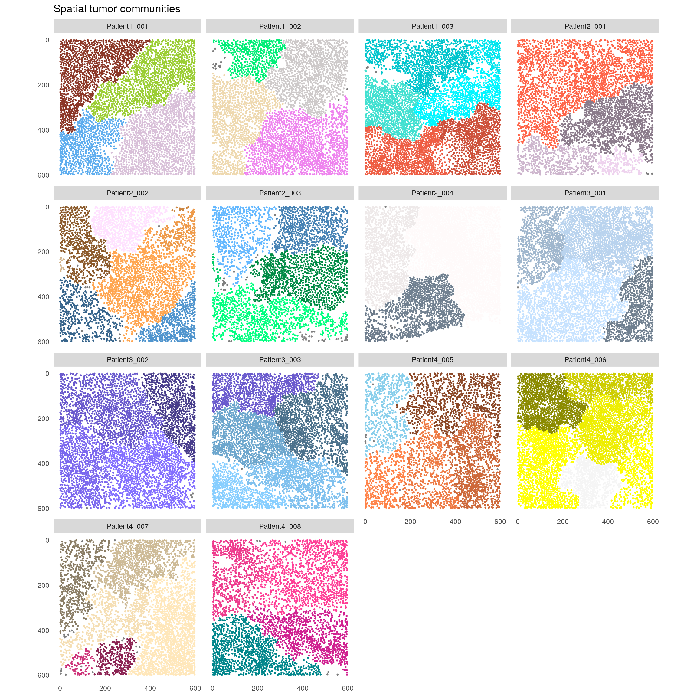
The example shown above might not be of interest if different tissue structures exist within which spatial communities should be computed. In the following example, we perform spatial community detection separately for tumor and stromal cells.
The general procedure is as follows:
create a
colData(spe)entry that specifies if a cell is part of the tumor or stroma compartment.use the
detectCommunityfunction of theimcRtoolspackage to cluster cells within the tumor or stroma compartment solely based on their spatial interaction graph as constructed by thesteinbockpackage.
Both tumor and stromal spatial communities are stored in the colData of
the SpatialExperiment object under the spatial_community identifier.
Of note: Here, and in contrast to the function call above, we set the seed
argument within the SerialParam function for reproducibility
purposes. We need this here due to the way the detectCommunity function
is implemented when setting the group_by parameter.
spe$tumor_stroma <- ifelse(spe$celltype == "Tumor", "Tumor", "Stroma")
library(BiocParallel)
spe <- detectCommunity(spe,
colPairName = "neighborhood",
size_threshold = 10,
group_by = "tumor_stroma",
BPPARAM = SerialParam(RNGseed = 220819))We can now separately visualize the tumor and stromal communities.
plotSpatial(spe[,spe$celltype == "Tumor"],
node_color_by = "spatial_community",
img_id = "sample_id",
node_size_fix = 0.5) +
theme(legend.position = "none") +
ggtitle("Spatial tumor communities") +
scale_color_manual(values = rev(colors()))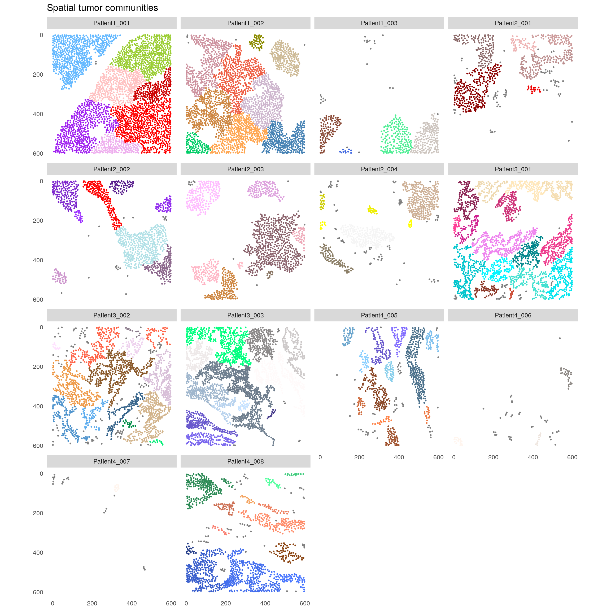
plotSpatial(spe[,spe$celltype != "Tumor"],
node_color_by = "spatial_community",
img_id = "sample_id",
node_size_fix = 0.5) +
theme(legend.position = "none") +
ggtitle("Spatial non-tumor communities") +
scale_color_manual(values = rev(colors()))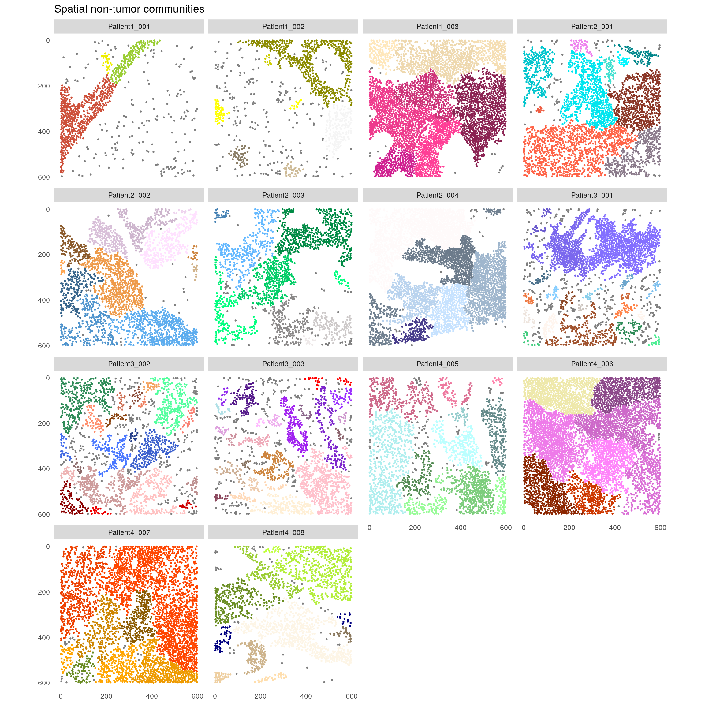
The example data was acquired using a panel that mainly focuses on immune cells. We are therefore unable to detect many tumor sub-phenotypes and will focus on the stromal communities.
In the next step, the fraction of cell types within each spatial stromal community is displayed.
library(pheatmap)
library(viridis)
cur_spe <- spe[,spe$celltype != "Tumor"]
for_plot <- prop.table(table(cur_spe$spatial_community,
cur_spe$celltype),
margin = 1)
pheatmap(for_plot,
color = colorRampPalette(c("dark blue", "white", "dark red"))(100),
show_rownames = FALSE,
scale = "column")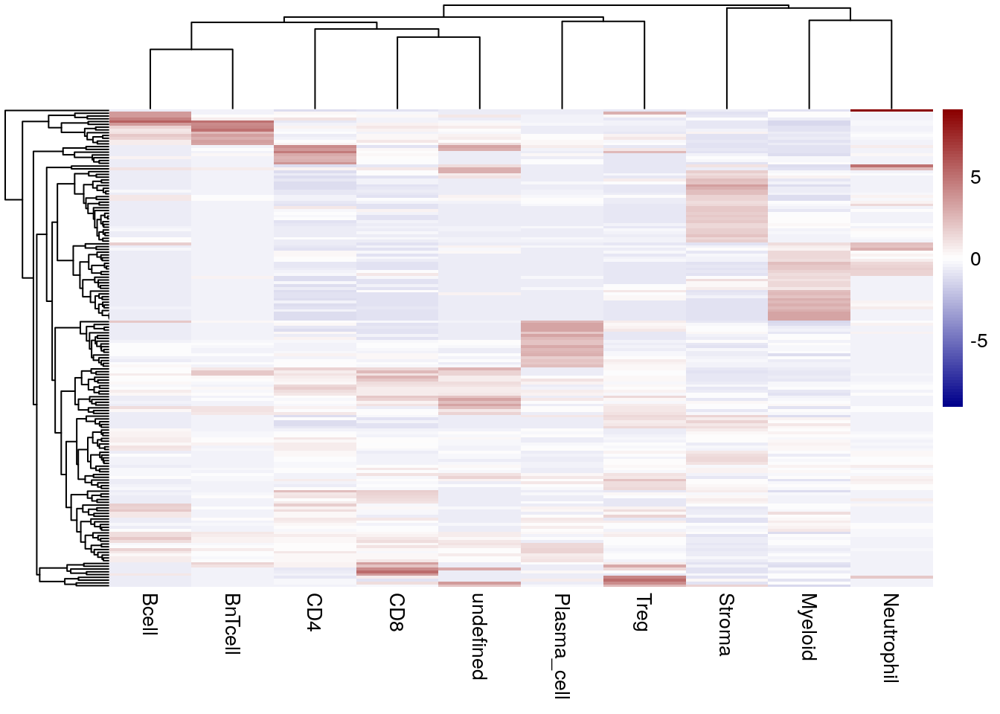
We observe that many spatial stromal communities are made up of myeloid cells or “stromal” (non-immune) cells. Other communities are mainly made up of B cells and BnT cells indicating tertiary lymphoid structures (TLS). While plasma cells, CD4\(^+\) or CD8\(^+\) T cells tend to aggregate, only in few spatial stromal communities consists of mainly neutrophils.
12.4 Cellular neighborhood analysis
The following section highlights the use of the imcRtools package to
detect cellular neighborhoods. This approach has been proposed by
(Goltsev et al. 2018) and (Schürch et al. 2020) to group cells based on information
contained in their direct neighborhood.
(Goltsev et al. 2018) perfomed Delaunay triangulation-based graph construction, neighborhood aggregation and then clustered cells. (Schürch et al. 2020) on the other hand constructed a 10-nearest neighbor graph before aggregating information across neighboring cells.
In the following code chunk we will use the 20-nearest neighbor graph as constructed above to define the direct cellular neighborhood. The aggregateNeighbors function allows neighborhood aggregation in 2 different ways:
- For each cell the function computes the fraction of cells of a certain type (e.g., cell type) among its neighbors.
- For each cell it aggregates (e.g., mean) the expression counts across all neighboring cells.
Based on these measures, cells can now be clustered into cellular neighborhoods. We will first compute the fraction of the different cell types among the 20-nearest neighbors and use kmeans clustering to group cells into 6 cellular neighborhoods.
Of note: constructing a 20-nearest neighbor graph and clustering
using kmeans with k=6 is only an example. Similar to the analysis done
in Section 9.2.2, it is recommended to perform a parameter
sweep across different graph construction algorithms and different
parmaters k for kmeans clustering. Finding the best CN detection
settings is also subject to the question at hand. Constructing graphs
with more neighbors usually results in larger CNs.
# By celltypes
spe <- aggregateNeighbors(spe,
colPairName = "knn_interaction_graph",
aggregate_by = "metadata",
count_by = "celltype")
set.seed(220705)
cn_1 <- kmeans(spe$aggregatedNeighbors, centers = 6)
spe$cn_celltypes <- as.factor(cn_1$cluster)
plotSpatial(spe,
node_color_by = "cn_celltypes",
img_id = "sample_id",
node_size_fix = 0.5) +
scale_color_brewer(palette = "Set3")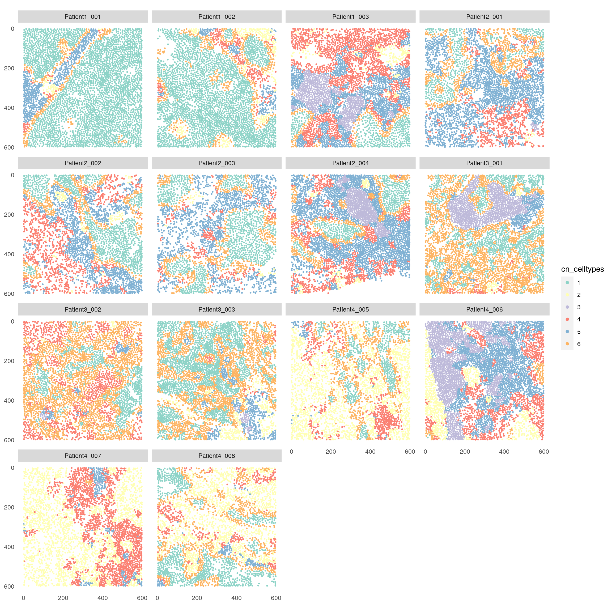
There are now different visualizations to examine the cell type composition of the detected cellular neighborhoods (CN). First we can look at the total number of cells per cell type and CN.
for_plot <- table(as.character(spe$cn_celltypes), spe$celltype)
pheatmap(for_plot,
color = viridis(100), display_numbers = TRUE,
number_color = "white", number_format = "%.0f")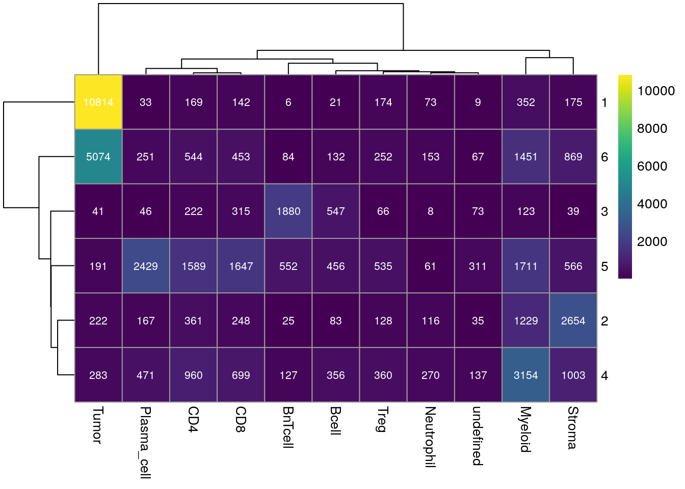
Next, we can observe per cell type the fraction of CN that they are distributed across.
for_plot <- prop.table(table(as.character(spe$cn_celltypes), spe$celltype), margin = 2)
pheatmap(for_plot,
color = viridis(100), display_numbers = TRUE,
number_color = "white", number_format = "%.2f")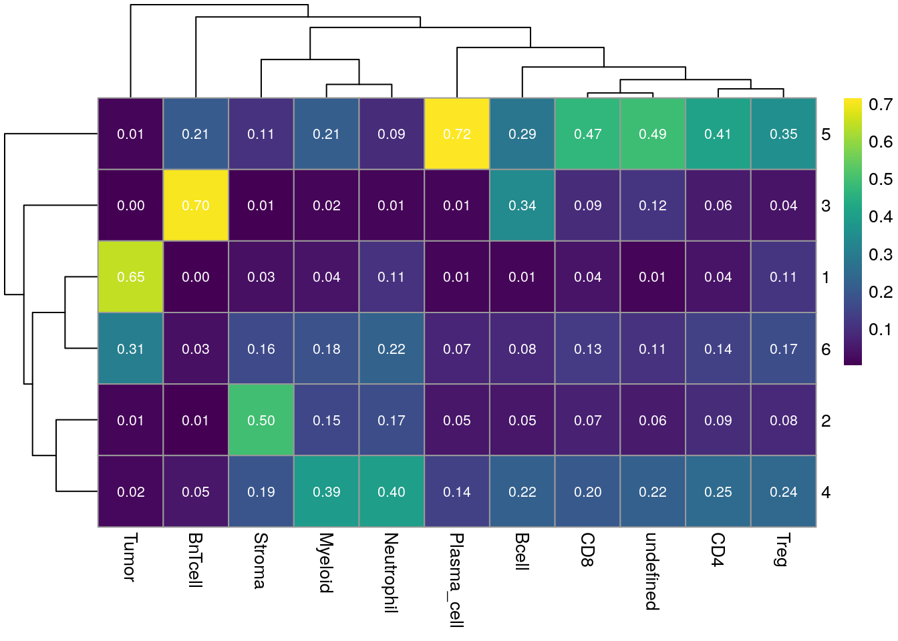
Similarly, we can visualize the fraction of each CN made up of each cell type.
for_plot <- prop.table(table(as.character(spe$cn_celltypes), spe$celltype), margin = 1)
pheatmap(for_plot,
color = viridis(100), display_numbers = TRUE,
number_color = "white", number_format = "%.2f")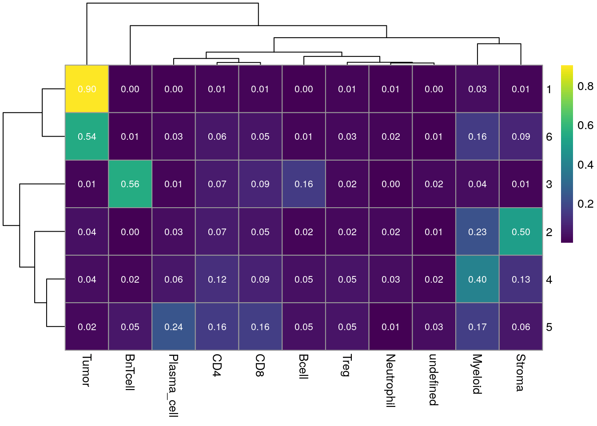
This visualization can also be scaled by column to account for the relative cell type abundance.
pheatmap(for_plot,
color = colorRampPalette(c("dark blue", "white", "dark red"))(100),
scale = "column")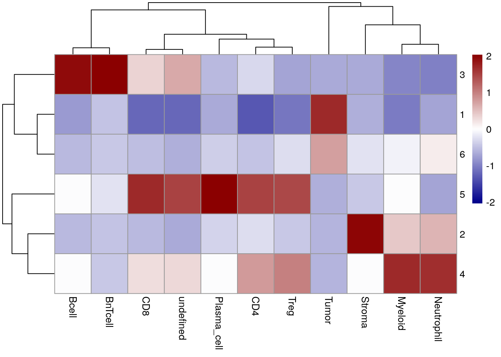
Lastly, we can visualize the enrichment of cell types within cellular neighborhoods
using the regionMap function of the lisaClust package.
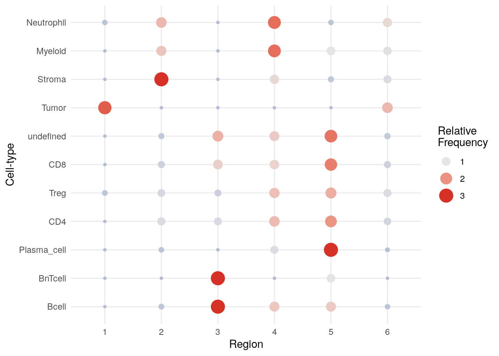
It is also recommended to visualize some images to confirm the interpretation of
cellular neighborhoods. For this we can either use the lisClust::hatchingPlot or
the imcRtools::plotSpatial functions:
# hatchingPlot
cur_spe <- spe[,spe$sample_id == "Patient1_003"]
cur_sce <- as(cur_spe, "SingleCellExperiment")
cur_sce$x <- spatialCoords(cur_spe)[,1]
cur_sce$y <- spatialCoords(cur_spe)[,2]
cur_sce$region <- as.character(cur_sce$cn_celltypes)
hatchingPlot(cur_sce, region = "region", cellType = "celltype") +
scale_color_manual(values = metadata(spe)$color_vectors$celltype)## There is no cellID. I'll create these## There is no image specific imageCellID. I'll create these## There is no imageID. I'll assume this is only one image and create an arbitrary imageID## Creating variable region## Concave windows are temperamental. Try choosing values of window.length > and < 1 if you have problems.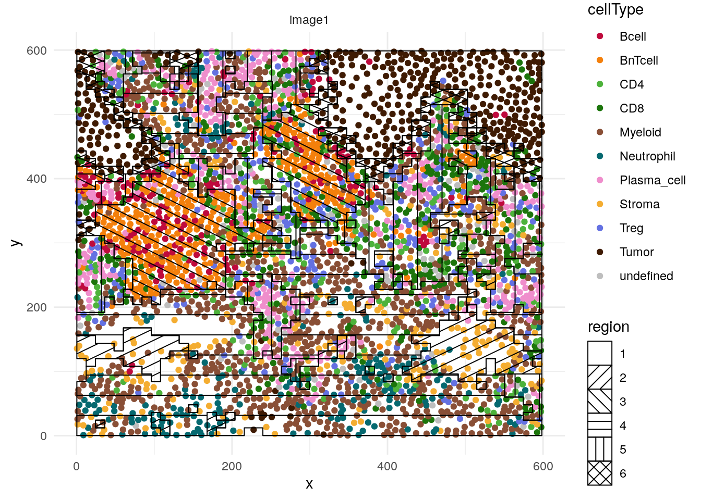
# plotSpatial
plotSpatial(spe[,spe$sample_id == "Patient1_003"],
img_id = "cn_celltypes", node_color_by = "celltype", node_size_fix = 0.7) +
scale_color_manual(values = metadata(spe)$color_vectors$celltype)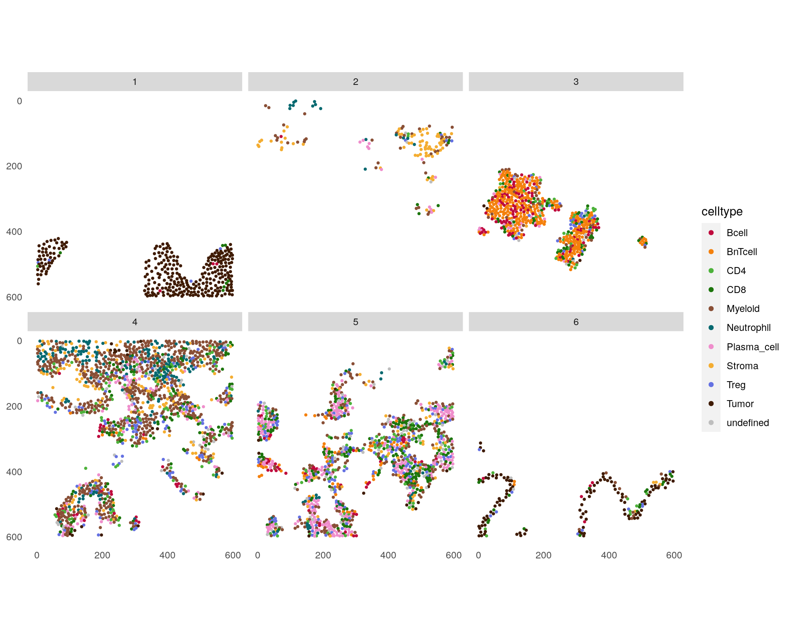
CN 1 and CN 6 are mainly enriched for tumor cells with CN 6 forming the tumor/stroma border. CN 3 is mainly enriched for B and BnT cells indicating TLS. CN 5 is composed of aggregated plasma cells and most T cells.
We will now detect cellular neighborhoods by computing the mean expression across the 20-nearest neighbor prior to kmeans clustering (k=6).
# By expression
spe <- aggregateNeighbors(spe,
colPairName = "knn_interaction_graph",
aggregate_by = "expression",
assay_type = "exprs",
subset_row = rowData(spe)$use_channel)
set.seed(220705)
cn_2 <- kmeans(spe$mean_aggregatedExpression, centers = 6)
spe$cn_expression <- as.factor(cn_2$cluster)
plotSpatial(spe,
node_color_by = "cn_expression",
img_id = "sample_id",
node_size_fix = 0.5) +
scale_color_brewer(palette = "Set3")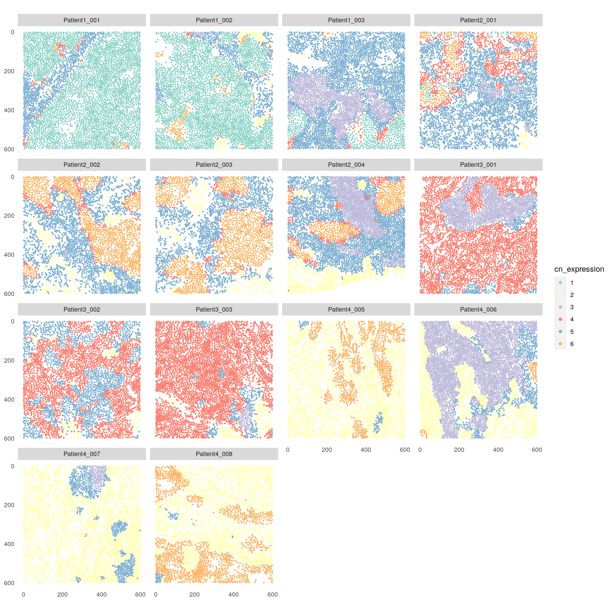
Also here, we can visualize the cell type composition of each cellular neighborhood.
for_plot <- prop.table(table(spe$cn_expression, spe$celltype),
margin = 1)
pheatmap(for_plot,
color = colorRampPalette(c("dark blue", "white", "dark red"))(100),
scale = "column")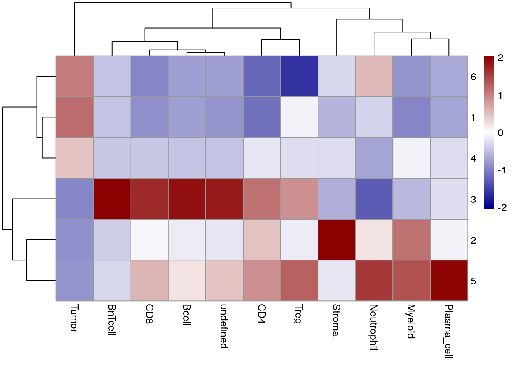
When clustering cells based on the mean expression within the direct neighborhood, tumor cells are split across CN 6, CN 1 and CN 4 without forming a clear tumor/stroma interface. This result reflects patient-to-patient differences in the expression of tumor markers.
CN 3 again contains B cells and BnT cells but also CD8 and undefined cells, therefore it is less representative of TLS compared to CN 3 in previous CN approach. CN detection based on mean marker expression is therefore sensitive to staining/expression differences between samples as well as lateral spillover due to imperfect segmentation.
An alternative to the aggregateNeighbors function is provided by the
lisaClust
Bioconductor package (Patrick et al. 2023). In contrast to imcRtools, the
lisaClust package computes local indicators of spatial associations
(LISA) functions and clusters cells based on those. More precise, the
package summarizes L-functions from a Poisson point process model to
derive numeric vectors for each cell which can then again be clustered
using kmeans. All steps are supported by the lisaClust function which
can be applied to a SingleCellExperiment and SpatialExperiment object.
In the following example, we calculate the LISA curves within a 10µm, 20µm and 50µm neighborhood around each cell. Increasing these radii will lead to broader and smoother spatial clusters. However, a number of parameter settings should be tested to estimate the robustness of the results.
set.seed(220705)
spe <- lisaClust(spe,
k = 6,
Rs = c(10, 20, 50),
spatialCoords = c("Pos_X", "Pos_Y"),
cellType = "celltype",
imageID = "sample_id")
plotSpatial(spe,
node_color_by = "region",
img_id = "sample_id",
node_size_fix = 0.5) +
scale_color_brewer(palette = "Set3")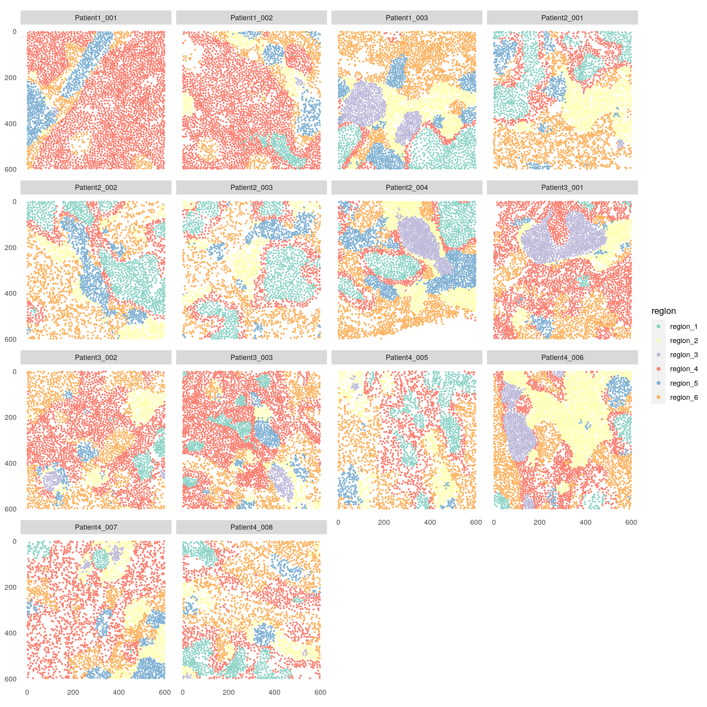
Similar to the example above, we can now observe the cell type composition per spatial cluster.
for_plot <- prop.table(table(spe$region, spe$celltype),
margin = 1)
pheatmap(for_plot,
color = colorRampPalette(c("dark blue", "white", "dark red"))(100),
scale = "column")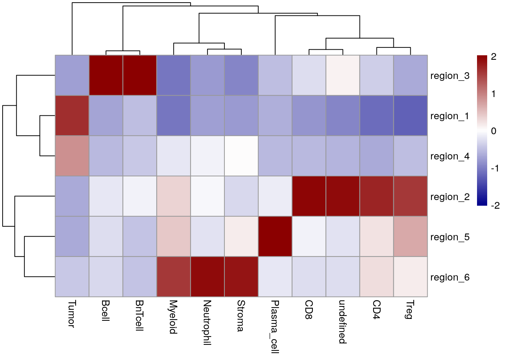
In this case, CN 1 and 4 contain tumor cells but no CN is forming the tumor/stroma interface. CN 3 represents TLS. CN 2 indicates T cell subtypes and plasma cells are aggregated to CN 5.
12.5 Spatial context analysis
Downstream of CN assignments, we will analyze the spatial context (SC)
of each cell using three functions from the imcRtools package.
While CNs can represent sites of unique local processes, the term SC was coined by Bhate and colleagues (Bhate et al. 2022) and describes tissue regions in which distinct CNs may be interacting. Hence, SCs may be interesting regions of specialized biological events.
Here, we will first detect SCs using the detectSpatialContext function. This
function relies on CN fractions for each cell in a spatial interaction
graph (originally a KNN graph), which we will calculate using
buildSpatialGraph and aggregateNeighbors. We will focus on the CNs
derived from cell type fractions but other CN assignments are possible.
Of note, the window size (k for KNN) for buildSpatialGraph should
reflect a length scale on which biological signals can be exchanged and
depends, among others, on cell density and tissue area. In view of their
divergent functionality, we recommend to use a larger window size for SC
(interaction between local processes) than for CN (local processes)
detection. Since we used a 20-nearest neighbor graph for CN assignment,
we will use a 40-nearest neighbor graph for SC detection. As before,
different parameters should be tested.
Subsequently, the CN fractions are sorted from high-to-low and the SC of each cell is assigned as the minimal combination of SCs that additively surpass a user-defined threshold. The default threshold of 0.9 aims to represent the dominant CNs, hence the most prevalent signals, in a given window.
For more details and biological validation, please refer to (Bhate et al. 2022).
library(circlize)
library(RColorBrewer)
# Construct a 40-nearest neighbor graph
spe <- buildSpatialGraph(spe,
img_id = "sample_id",
type = "knn",
name = "knn_spatialcontext_graph",
k = 40)
# Compute the fraction of cellular neighborhoods around each cell
spe <- aggregateNeighbors(spe,
colPairName = "knn_spatialcontext_graph",
aggregate_by = "metadata",
count_by = "cn_celltypes",
name = "aggregatedNeighborhood")
# Detect spatial contexts
spe <- detectSpatialContext(spe,
entry = "aggregatedNeighborhood",
threshold = 0.90,
name = "spatial_context")
# Define SC color scheme
n_SCs <- length(unique(spe$spatial_context))
col_SC <- setNames(colorRampPalette(brewer.pal(9, "Paired"))(n_SCs),
sort(unique(spe$spatial_context)))
# Visualize spatial contexts on images
plotSpatial(spe,
node_color_by = "spatial_context",
img_id = "sample_id",
node_size_fix = 0.5) +
scale_color_manual(values = col_SC)
We detect a total of 52 distinct SCs across this dataset.
For ease of interpretation, we will directly compare the CN and SC
assignments for Patient3_001.
library(patchwork)
# Compare CN and SC for one patient
p1 <- plotSpatial(spe[,spe$sample_id == "Patient3_001"],
node_color_by = "cn_celltypes",
img_id = "sample_id",
node_size_fix = 0.5) +
scale_color_brewer(palette = "Set3")
p2 <- plotSpatial(spe[,spe$sample_id == "Patient3_001"],
node_color_by = "spatial_context",
img_id = "sample_id",
node_size_fix = 0.5) +
scale_color_manual(values = col_SC, limits = force)
p1 + p2
As expected, we can observe that interfaces between different CNs make up distinct SCs. For instance, interface between CN 3 (TLS region consisting of B and BnT cells) and CN 5 (Plasma- and T-cell dominated) turns to SC 3_5. On the other hand, the core of CN 3 becomes SC 3, since the most abundant CN of the neighborhood for these cells is just the CN itself.
Next, we filter the SCs based on user-defined thresholds for number of
group entries (here at least 3 patients) and/or total number of cells
(here minimum of 100 cells) per SC using the filterSpatialContext function.
## Filter spatial contexts
# By number of group entries
spe <- filterSpatialContext(spe,
entry = "spatial_context",
group_by = "patient_id",
group_threshold = 3,
name = "spatial_context_filtered")
plotSpatial(spe,
node_color_by = "spatial_context_filtered",
img_id = "sample_id",
node_size_fix = 0.5) +
scale_color_manual(values = col_SC, limits = force)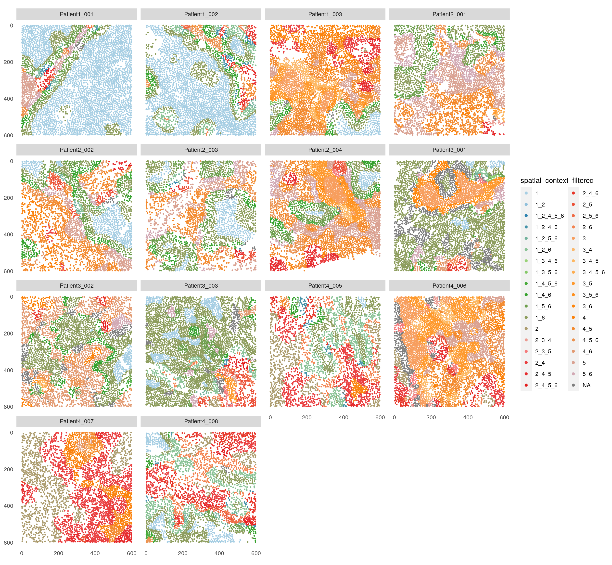
# Filter out small and infrequent spatial contexts
spe <- filterSpatialContext(spe,
entry = "spatial_context",
group_by = "patient_id",
group_threshold = 3,
cells_threshold = 100,
name = "spatial_context_filtered")
plotSpatial(spe,
node_color_by = "spatial_context_filtered",
img_id = "sample_id",
node_size_fix = 0.5) +
scale_color_manual(values = col_SC, limits = force)
Lastly, we can use the plotSpatialContext function to generate SC
graphs, analogous to CN combination maps in (Bhate et al. 2022). Returned
objects are ggplots, which can be easily modified further. We will
create a SC graph for the filtered SCs here.
## Plot spatial context graph
# Colored by name, size by n_cells
plotSpatialContext(spe,
entry = "spatial_context_filtered",
group_by = "sample_id",
node_color_by = "name",
node_size_by = "n_cells",
node_label_color_by = "name")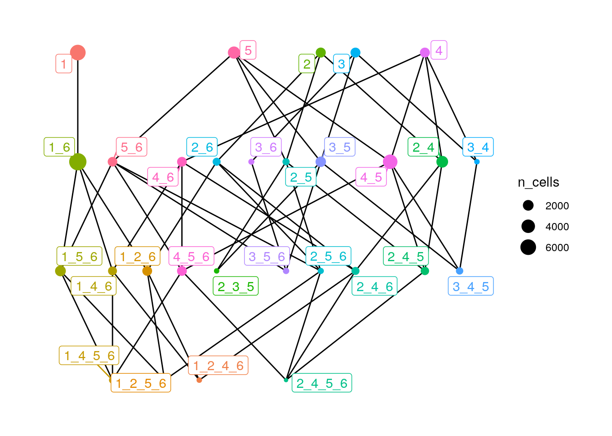
# Colored by n_cells, size by n_group
plotSpatialContext(spe,
entry = "spatial_context_filtered",
group_by = "sample_id",
node_color_by = "n_cells",
node_size_by = "n_group",
node_label_color_by = "n_cells") +
scale_color_viridis()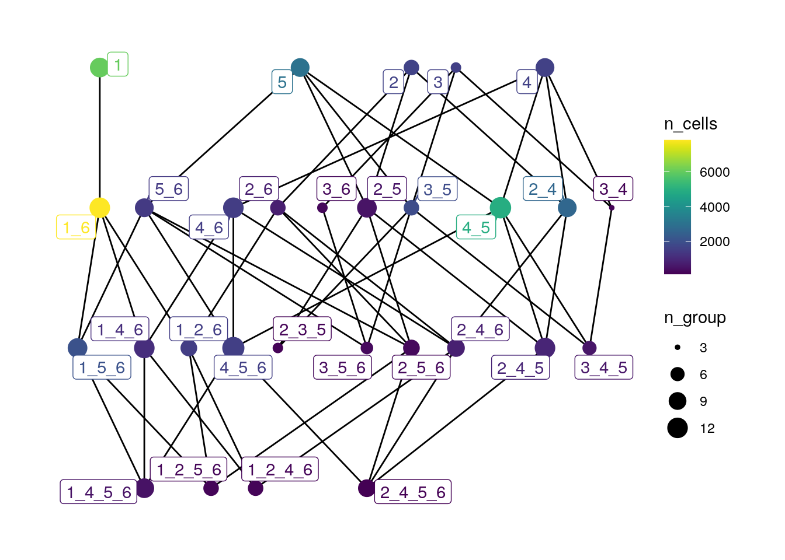
SC 1 (Tumor-dominated), SC 1_6 (Tumor and Tumor-Stroma interface) and SC 4_5 (Plasma/T cell and Myeloid/Neutrophil interface) are the most frequent SCs in this dataset. Moreover, we may compare the degree of the different nodes in the SC graph. For example, we can observe that SC 1 has only one degree (directed to SC 1_6), while SC 5 (T cells and plasma cells) has a much higher degree (n = 4) and potentially more CN interactions.
12.6 Patch detection
The previous section focused on detecting cellular neighborhoods in a rather
unsupervised fashion. However, the imcRtools package also provides methods for
detecting spatial compartments in a supervised fashion. The
patchDetection
function allows the detection of connected sets of similar cells as proposed by
(Hoch et al. 2022). In the following example, we will use the patchDetection function
to detect tumor patches in three steps:
- Find connected sets of tumor cells (using the
steinbockgraph).
- Components which contain less than 10 cells are excluded.
- Expand the components by 1µm to construct a concave hull around the patch and include cells within the patch.
spe <- patchDetection(spe,
patch_cells = spe$celltype == "Tumor",
img_id = "sample_id",
expand_by = 1,
min_patch_size = 10,
colPairName = "neighborhood",
BPPARAM = MulticoreParam())## The returned object is ordered by the 'sample_id' entry.plotSpatial(spe,
node_color_by = "patch_id",
img_id = "sample_id",
node_size_fix = 0.5) +
theme(legend.position = "none") +
scale_color_manual(values = rev(colors()))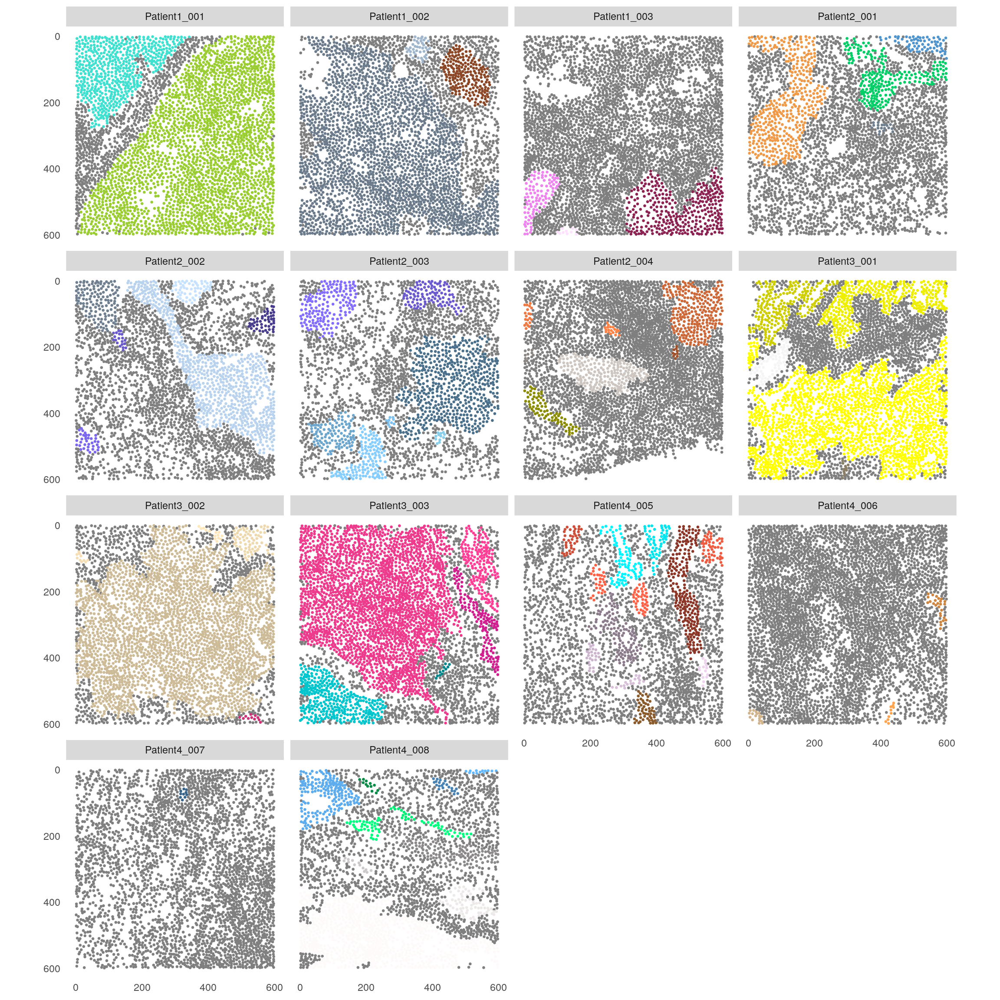
We can now calculate the fraction of T cells within each tumor patch to roughly estimate T cell infiltration.
library(tidyverse)
colData(spe) %>% as_tibble() %>%
group_by(patch_id, sample_id) %>%
summarize(Tcell_count = sum(celltype == "CD8" | celltype == "CD4"),
patch_size = n(),
Tcell_freq = Tcell_count / patch_size) %>%
filter(!is.na(patch_id)) %>%
ggplot() +
geom_point(aes(log10(patch_size), Tcell_freq, color = sample_id)) +
theme_classic()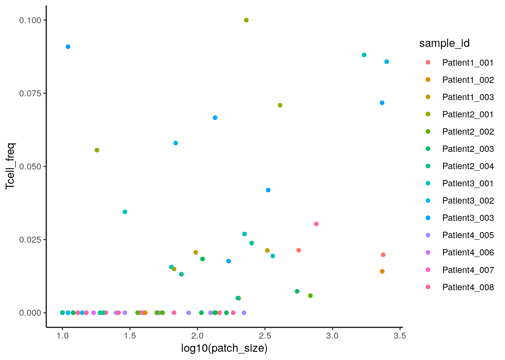
We can now measure the size of each patch using the patchSize function and visualize tumor patch distribution per patient.
patch_size <- patchSize(spe, "patch_id")
patch_size <- merge(patch_size,
colData(spe)[match(patch_size$patch_id, spe$patch_id),],
by = "patch_id")
ggplot(as.data.frame(patch_size)) +
geom_boxplot(aes(patient_id, log10(size))) +
geom_point(aes(patient_id, log10(size)))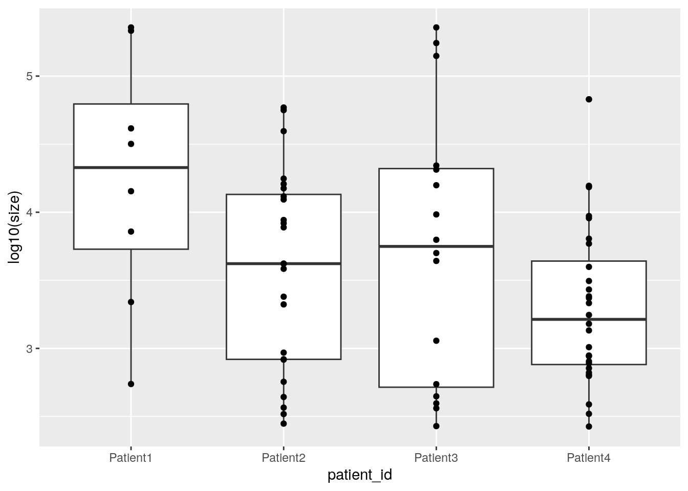
The minDistToCells function can be used to calculate the minimum distance between each cell and a cell set of interest. Here, we highlight its use to calculate the minimum distance of all cells to the detected tumor patches. Negative values indicate the minimum distance of each tumor patch cell to a non-tumor patch cell.
## The returned object is ordered by the 'sample_id' entry.plotSpatial(spe,
node_color_by = "distToCells",
img_id = "sample_id",
node_size_fix = 0.5) +
scale_color_gradient2(low = "dark blue", mid = "white", high = "dark red")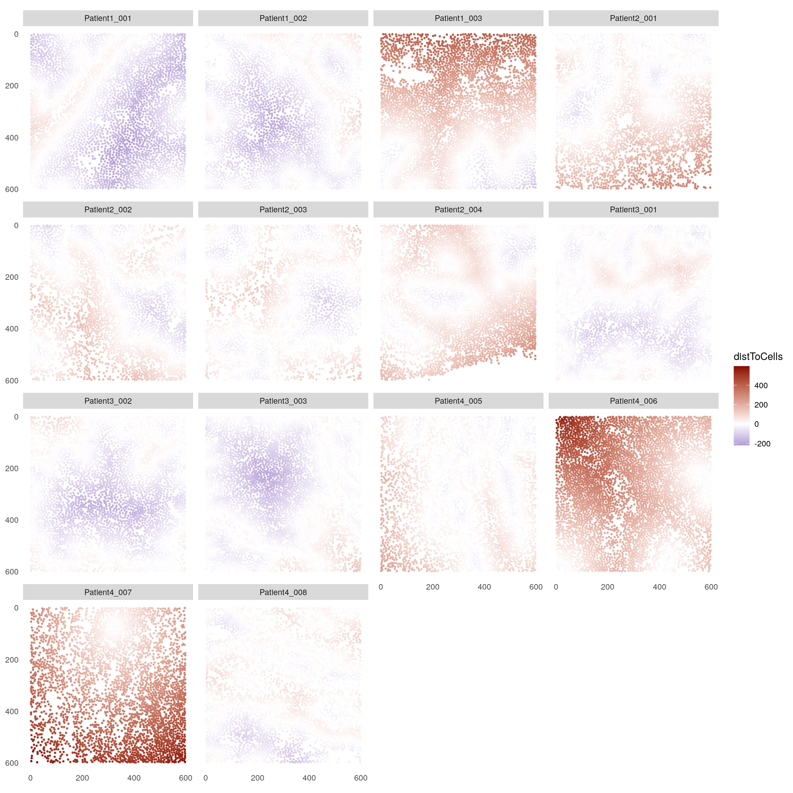
Finally, we can observe the minimum distances to tumor patches in a cell type specific manner.
library(ggridges)
ggplot(as.data.frame(colData(spe))) +
geom_density_ridges(aes(distToCells, celltype, fill = celltype)) +
geom_vline(xintercept = 0, color = "dark red", linewidth = 2) +
scale_fill_manual(values = metadata(spe)$color_vectors$celltype)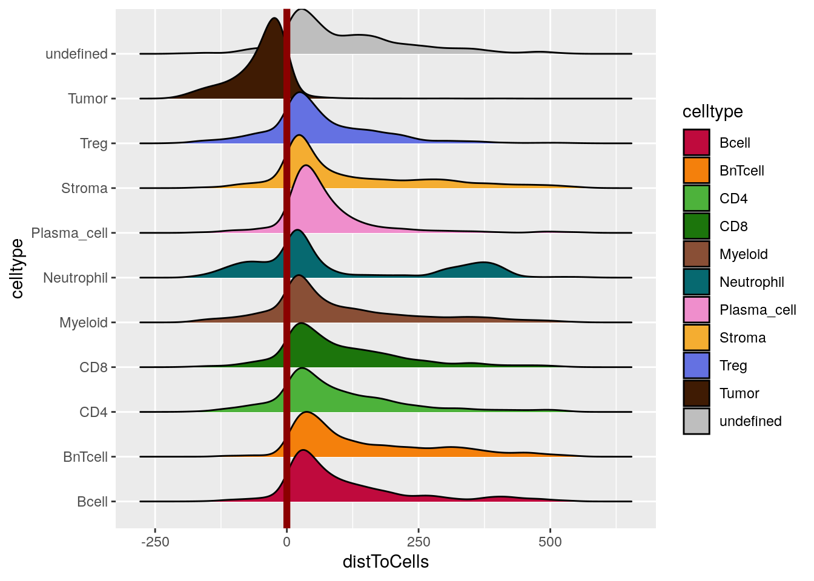
12.7 Interaction analysis
Bug notice: we discovered and fixed a bug in the testInteractions function in version below 1.5.5 which affected SingleCellExperiment or SpatialExperiment objects in which cells were not grouped by image. Please make sure you have the newest version (>= 1.6.0) installed.
The next section focuses on statistically testing the pairwise interaction
between all cell types of the dataset. For this, the imcRtools package
provides the
testInteractions
function which implements the interaction testing strategy proposed by
(Schapiro et al. 2017).
Per grouping level (e.g., image), the testInteractions function computes the
averaged cell type/cell type interaction count and compares this count against
an empirical null distribution which is generated by permuting all cell labels (while maintaining the tissue structure).
In the following example, we use the steinbock generated spatial interaction
graph and estimate the interaction or avoidance between cell types in the
dataset.
library(scales)
out <- testInteractions(spe,
group_by = "sample_id",
label = "celltype",
colPairName = "neighborhood",
BPPARAM = SerialParam(RNGseed = 221029))
head(out)## DataFrame with 6 rows and 10 columns
## group_by from_label to_label ct p_gt p_lt
## <character> <character> <character> <numeric> <numeric> <numeric>
## 1 Patient1_001 Bcell Bcell 0 1.000000 1.000000
## 2 Patient1_001 Bcell BnTcell 0 1.000000 0.998002
## 3 Patient1_001 Bcell CD4 3 0.001998 1.000000
## 4 Patient1_001 Bcell CD8 0 1.000000 0.898102
## 5 Patient1_001 Bcell Myeloid 0 1.000000 0.804196
## 6 Patient1_001 Bcell Neutrophil NA NA NA
## interaction p sig sigval
## <logical> <numeric> <logical> <numeric>
## 1 FALSE 1.000000 FALSE 0
## 2 FALSE 0.998002 FALSE 0
## 3 TRUE 0.001998 TRUE 1
## 4 FALSE 0.898102 FALSE 0
## 5 FALSE 0.804196 FALSE 0
## 6 NA NA NA NAThe returned DataFrame contains the test results per grouping level (in this case
the image ID, group_by), “from” cell type (from_label) and “to” cell type
(to_label). The sigval entry indicates if a pair of cell types is
significantly interacting (sigval = 1), if a pair of cell types is
significantly avoiding (sigval = -1) or if no significant interaction or
avoidance was detected (sigval = 0).
These results can be visualized by computing the sum of the sigval entries
across all images:
out %>% as_tibble() %>%
group_by(from_label, to_label) %>%
summarize(sum_sigval = sum(sigval, na.rm = TRUE)) %>%
ggplot() +
geom_tile(aes(from_label, to_label, fill = sum_sigval)) +
scale_fill_gradient2(low = muted("blue"), mid = "white", high = muted("red")) +
theme(axis.text.x = element_text(angle = 45, hjust = 1))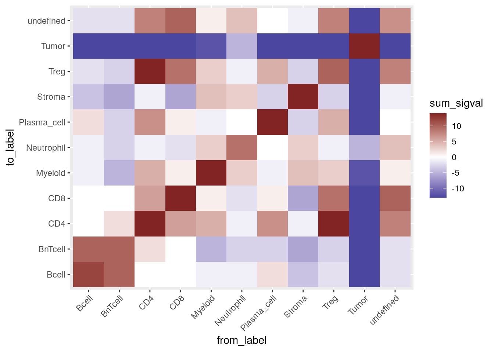
In the plot above the red tiles indicate cell type pairs that were detected to significantly interact on a large number of images. On the other hand, blue tiles show cell type pairs which tend to avoid each other on a large number of images.
Here we can observe that tumor cells are mostly compartmentalized and are in avoidance with other cell types. As expected, B cells interact with BnT cells; regulatory T cells interact with CD4+ T cells and CD8+ T cells. Most cell types show self interactions indicating spatial clustering.
The imcRtools package further implements an interaction testing strategy
proposed by (Schulz et al. 2018) where the hypothesis is tested if at least n cells of
a certain type are located around a target cell type (from_cell). This type of
testing can be performed by selecting method = "patch" and specifying the
number of patch cells via the patch_size parameter.
out <- testInteractions(spe,
group_by = "sample_id",
label = "celltype",
colPairName = "neighborhood",
method = "patch",
patch_size = 3,
BPPARAM = SerialParam(RNGseed = 221029))
out %>% as_tibble() %>%
group_by(from_label, to_label) %>%
summarize(sum_sigval = sum(sigval, na.rm = TRUE)) %>%
ggplot() +
geom_tile(aes(from_label, to_label, fill = sum_sigval)) +
scale_fill_gradient2(low = muted("blue"), mid = "white", high = muted("red")) +
theme(axis.text.x = element_text(angle = 45, hjust = 1))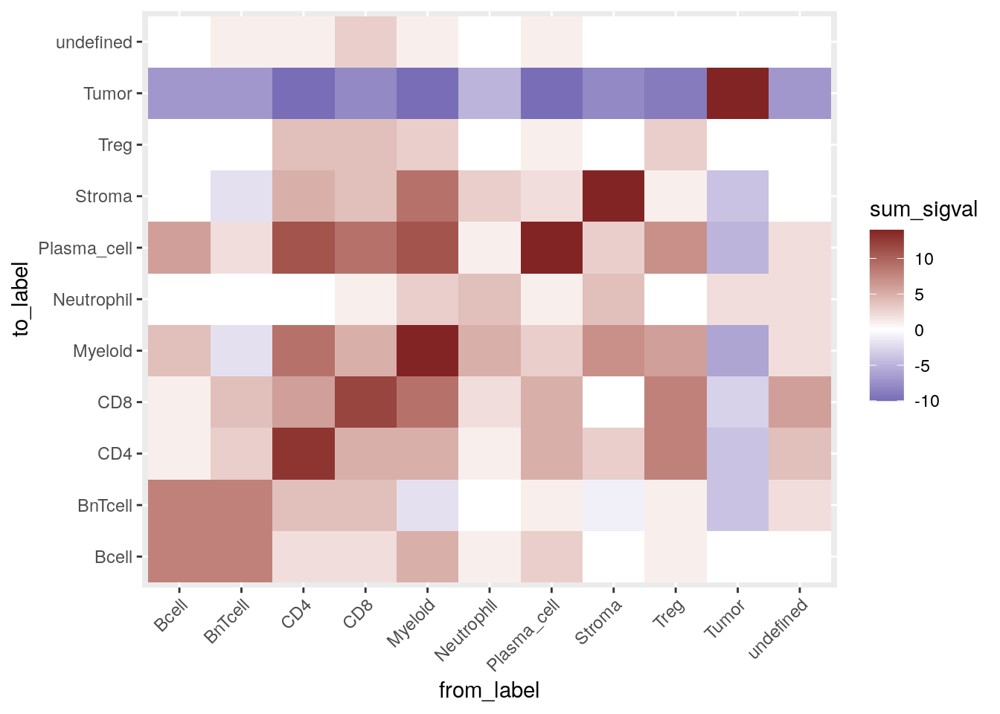
These results are comparable to the interaction testing presented above. The main difference comes from the lack of symmetry. We can now for example see that 3 or more myeloid cells sit around CD4\(^+\) T cells while this interaction is not as strong when considering CD4\(^+\) T cells sitting around myeloid cells.
Finally, we save the updated SpatialExperiment object.
12.8 Session Info
SessionInfo
## R version 4.3.2 (2023-10-31)
## Platform: x86_64-pc-linux-gnu (64-bit)
## Running under: Ubuntu 22.04.3 LTS
##
## Matrix products: default
## BLAS: /usr/lib/x86_64-linux-gnu/openblas-pthread/libblas.so.3
## LAPACK: /usr/lib/x86_64-linux-gnu/openblas-pthread/libopenblasp-r0.3.20.so; LAPACK version 3.10.0
##
## locale:
## [1] LC_CTYPE=en_US.UTF-8 LC_NUMERIC=C
## [3] LC_TIME=en_US.UTF-8 LC_COLLATE=en_US.UTF-8
## [5] LC_MONETARY=en_US.UTF-8 LC_MESSAGES=en_US.UTF-8
## [7] LC_PAPER=en_US.UTF-8 LC_NAME=C
## [9] LC_ADDRESS=C LC_TELEPHONE=C
## [11] LC_MEASUREMENT=en_US.UTF-8 LC_IDENTIFICATION=C
##
## time zone: Etc/UTC
## tzcode source: system (glibc)
##
## attached base packages:
## [1] stats4 stats graphics grDevices utils datasets methods
## [8] base
##
## other attached packages:
## [1] testthat_3.2.1 scales_1.3.0
## [3] ggridges_0.5.5 lubridate_1.9.3
## [5] forcats_1.0.0 stringr_1.5.1
## [7] dplyr_1.1.4 purrr_1.0.2
## [9] readr_2.1.4 tidyr_1.3.0
## [11] tibble_3.2.1 tidyverse_2.0.0
## [13] patchwork_1.1.3 RColorBrewer_1.1-3
## [15] circlize_0.4.15 lisaClust_1.10.1
## [17] pheatmap_1.0.12 BiocParallel_1.36.0
## [19] viridis_0.6.4 viridisLite_0.4.2
## [21] ggplot2_3.4.4 imcRtools_1.8.0
## [23] SpatialExperiment_1.12.0 SingleCellExperiment_1.24.0
## [25] SummarizedExperiment_1.32.0 Biobase_2.62.0
## [27] GenomicRanges_1.54.1 GenomeInfoDb_1.38.5
## [29] IRanges_2.36.0 S4Vectors_0.40.2
## [31] BiocGenerics_0.48.1 MatrixGenerics_1.14.0
## [33] matrixStats_1.2.0
##
## loaded via a namespace (and not attached):
## [1] spatstat.sparse_3.0-3 bitops_1.0-7
## [3] sf_1.0-15 EBImage_4.44.0
## [5] doParallel_1.0.17 numDeriv_2016.8-1.1
## [7] tools_4.3.2 backports_1.4.1
## [9] utf8_1.2.4 R6_2.5.1
## [11] DT_0.31 HDF5Array_1.30.0
## [13] mgcv_1.9-0 rhdf5filters_1.14.1
## [15] GetoptLong_1.0.5 withr_2.5.2
## [17] sp_2.1-2 gridExtra_2.3
## [19] ClassifyR_3.6.2 cli_3.6.2
## [21] spatstat.explore_3.2-5 sandwich_3.1-0
## [23] labeling_0.4.3 sass_0.4.8
## [25] nnls_1.5 mvtnorm_1.2-4
## [27] spatstat.data_3.0-3 proxy_0.4-27
## [29] systemfonts_1.0.5 colorRamps_2.3.1
## [31] svglite_2.1.3 scater_1.30.1
## [33] plotrix_3.8-4 flowCore_2.14.0
## [35] generics_0.1.3 shape_1.4.6
## [37] spatstat.random_3.2-2 gtools_3.9.5
## [39] vroom_1.6.5 car_3.1-2
## [41] scam_1.2-14 Matrix_1.6-4
## [43] RProtoBufLib_2.14.0 ggbeeswarm_0.7.2
## [45] fansi_1.0.6 abind_1.4-5
## [47] terra_1.7-65 lifecycle_1.0.4
## [49] multcomp_1.4-25 yaml_2.3.8
## [51] carData_3.0-5 rhdf5_2.46.1
## [53] SparseArray_1.2.3 Rtsne_0.17
## [55] grid_4.3.2 promises_1.2.1
## [57] crayon_1.5.2 shinydashboard_0.7.2
## [59] lattice_0.21-9 beachmat_2.18.0
## [61] cowplot_1.1.2 magick_2.8.2
## [63] cytomapper_1.14.0 pillar_1.9.0
## [65] knitr_1.45 ComplexHeatmap_2.18.0
## [67] RTriangle_1.6-0.12 boot_1.3-28.1
## [69] rjson_0.2.21 codetools_0.2-19
## [71] glue_1.6.2 V8_4.4.1
## [73] data.table_1.14.10 MultiAssayExperiment_1.28.0
## [75] vctrs_0.6.5 png_0.1-8
## [77] gtable_0.3.4 cachem_1.0.8
## [79] xfun_0.41 S4Arrays_1.2.0
## [81] mime_0.12 tidygraph_1.3.0
## [83] ConsensusClusterPlus_1.66.0 survival_3.5-7
## [85] iterators_1.0.14 cytolib_2.14.0
## [87] units_0.8-5 ellipsis_0.3.2
## [89] TH.data_1.1-2 nlme_3.1-163
## [91] bit64_4.0.5 rprojroot_2.0.4
## [93] bslib_0.6.1 irlba_2.3.5.1
## [95] svgPanZoom_0.3.4 vipor_0.4.7
## [97] KernSmooth_2.23-22 colorspace_2.1-0
## [99] DBI_1.2.0 raster_3.6-26
## [101] tidyselect_1.2.0 curl_5.2.0
## [103] bit_4.0.5 compiler_4.3.2
## [105] BiocNeighbors_1.20.1 desc_1.4.3
## [107] DelayedArray_0.28.0 bookdown_0.37
## [109] classInt_0.4-10 distances_0.1.10
## [111] goftest_1.2-3 tiff_0.1-12
## [113] digest_0.6.33 minqa_1.2.6
## [115] fftwtools_0.9-11 spatstat.utils_3.0-4
## [117] rmarkdown_2.25 XVector_0.42.0
## [119] CATALYST_1.26.0 htmltools_0.5.7
## [121] pkgconfig_2.0.3 jpeg_0.1-10
## [123] lme4_1.1-35.1 sparseMatrixStats_1.14.0
## [125] highr_0.10 fastmap_1.1.1
## [127] rlang_1.1.2 GlobalOptions_0.1.2
## [129] htmlwidgets_1.6.4 shiny_1.8.0
## [131] DelayedMatrixStats_1.24.0 farver_2.1.1
## [133] jquerylib_0.1.4 zoo_1.8-12
## [135] jsonlite_1.8.8 spicyR_1.14.2
## [137] BiocSingular_1.18.0 RCurl_1.98-1.13
## [139] magrittr_2.0.3 scuttle_1.12.0
## [141] GenomeInfoDbData_1.2.11 Rhdf5lib_1.24.1
## [143] munsell_0.5.0 Rcpp_1.0.11
## [145] ggnewscale_0.4.9 stringi_1.8.3
## [147] ggraph_2.1.0 brio_1.1.4
## [149] zlibbioc_1.48.0 MASS_7.3-60
## [151] plyr_1.8.9 parallel_4.3.2
## [153] ggrepel_0.9.4 deldir_2.0-2
## [155] graphlayouts_1.0.2 splines_4.3.2
## [157] tensor_1.5 hms_1.1.3
## [159] locfit_1.5-9.8 igraph_1.6.0
## [161] ggpubr_0.6.0 spatstat.geom_3.2-7
## [163] ggsignif_0.6.4 pkgload_1.3.3
## [165] reshape2_1.4.4 ScaledMatrix_1.10.0
## [167] XML_3.99-0.16 drc_3.0-1
## [169] evaluate_0.23 nloptr_2.0.3
## [171] tzdb_0.4.0 foreach_1.5.2
## [173] tweenr_2.0.2 httpuv_1.6.13
## [175] polyclip_1.10-6 clue_0.3-65
## [177] ggforce_0.4.1 rsvd_1.0.5
## [179] broom_1.0.5 xtable_1.8-4
## [181] e1071_1.7-14 rstatix_0.7.2
## [183] later_1.3.2 class_7.3-22
## [185] lmerTest_3.1-3 FlowSOM_2.10.0
## [187] beeswarm_0.4.0 cluster_2.1.4
## [189] timechange_0.2.0 concaveman_1.1.0